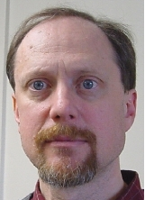

Important People
Andrzej Piotr Ruszczyński
Prof. Andrezj Ruszczyński is my Ph.D. advisor and closest collaborator during my doctoral study. From him, I learnt opimization theory and optimal control of dynamic system. In particular, we work on extension of risk-averse control into continuous-time setting. Moreover, he has significant impact on my research and teaching philosophy.
Bio: Andrzej Piotr Ruszczyński (born July 29, 1951) is a Polish-American applied mathematician, noted for his contributions to mathematical optimization, in particular, stochastic programming and risk-averse optimization. His main achievements include the development of decomposition methods for stochastic programming problems, the theory of stochastic dominance constraints (jointly with Darinka Dentcheva), contributed to the theory of coherent, conditional, and dynamic risk measures (jointly with Alexander Shapiro), and created the theory of Markov risk measures. He authored 5 books and more than 80 research papers.
Daniel Leonard Ocone（Personal Website)

Prof.Daniel, Ocone is the member of my dissertation proposal committee, and will be on the committee for my dissertation defense as well. He is my first teacher in stochastic analysis, who introduces me to the study of advanced probability. Inspired by his teaching, I started my Ph.D. career in this field, and it is a honor to have him on my defense committee.
Bio: Prof.Daniel, Leonard, Ocone (born 1953) specializes in probability theory and stochastic processes. He obtained his Ph.D at MIT in 1980 under the supervision of Sanjoy K. Mitter. He is known for the Clark–Ocone theorem in stochastic analysis. The continuous Ocone martingale is also named after him; it is a continuous martingale that is conditionally Gaussian, given its quadratic variation process.